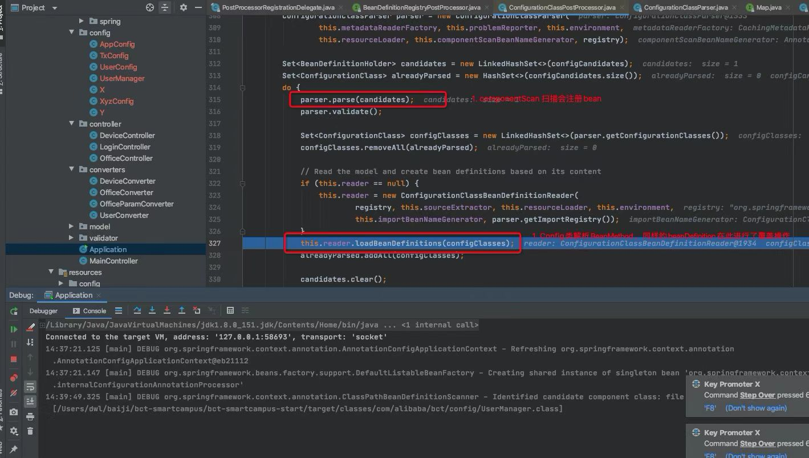

TreeviewCopyright @doctording all right reserved, powered by aleen42
@Component,@Bean同时作用同一个类
测试程序
@Configuration
@ComponentScan("com.test")
public class UserConfig {
@Value("${key1}")
String userName;
@Bean
public UserManager userManager(){
UserManager userManager = new UserManager(userName);
return userManager;
}
}
@Component
public class UserManager {
String userName;
public UserManager() {
System.out.println("constructor UserManager()");
}
public UserManager(String userName) {
this.userName = userName;
System.out.println("constructor UserManager(String userName)");
}
}
@Component
public class UserPropertyPlaceholderConfigurer extends PropertyPlaceholderConfigurer {
@Override
protected void loadProperties(Properties props) throws IOException {
super.loadProperties(props);
props.put("key1", "value1");
}
}
测试代码
public static void main(String[] args) {
AnnotationConfigApplicationContext ac = new AnnotationConfigApplicationContext(UserConfig.class);
UserManager userManager = ac.getBean(UserManager.class);
System.out.println(userManager);
}
结论
默认 @Configuration + @Bean 会覆盖 @Component
源码流程

在执行ConfigurationClassPostProcessor的postProcessBeanFactory方法时，BeanDefinition会注册两次
- 第一次：ConfigurationClassPostProcessor内部的@ComponentScan扫描bean完成注册
- 第二次：ConfigurationClassPostProcessor全注解类内部的@Bean方法解析去注册bean,而这会对第一次的注册进行覆盖